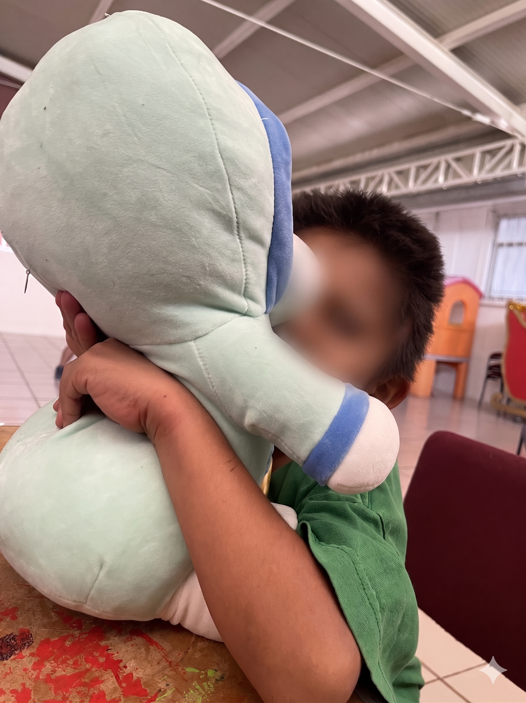
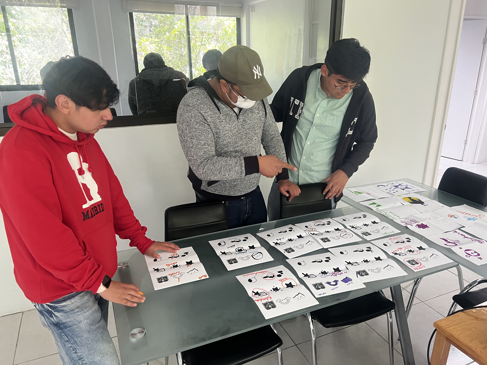
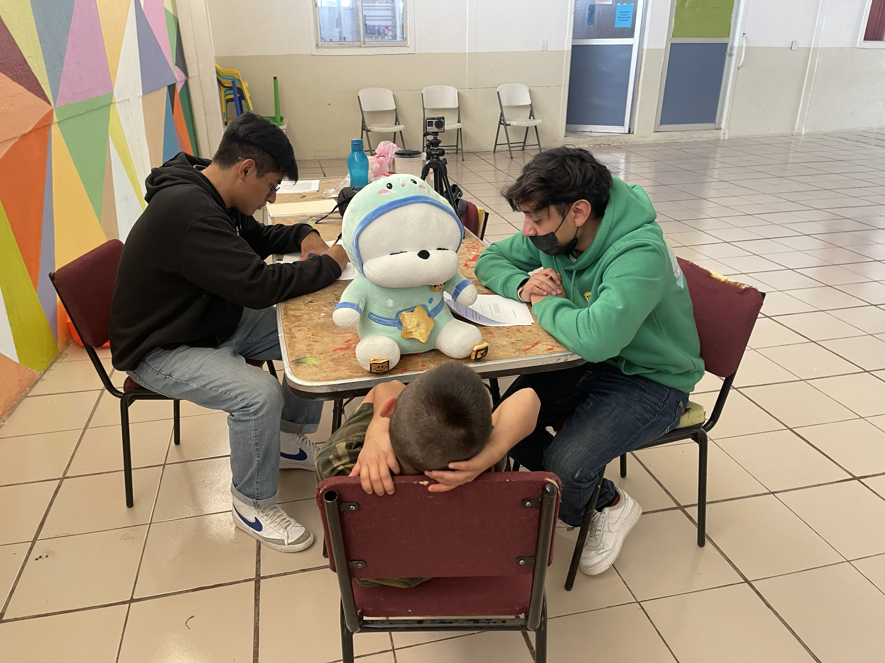
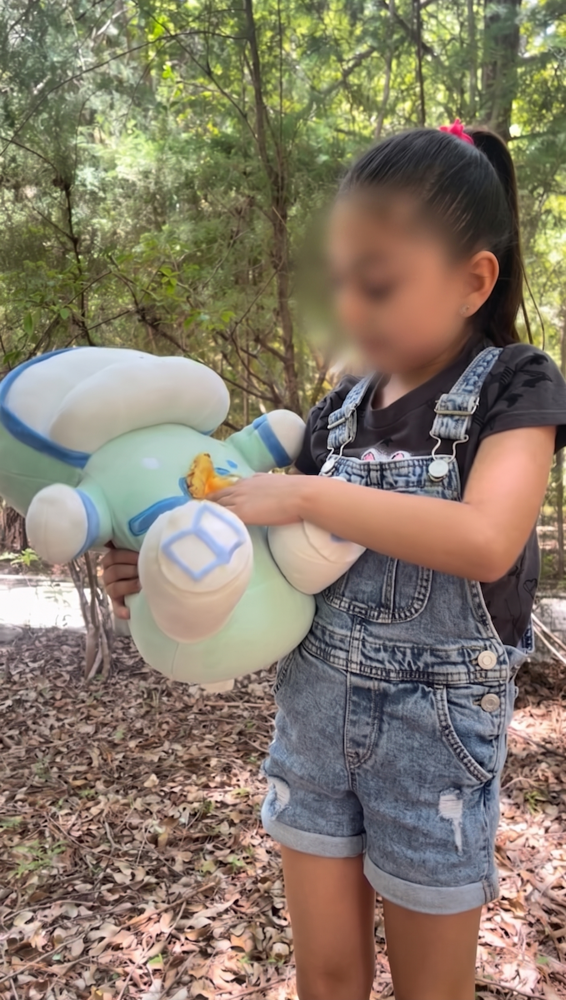
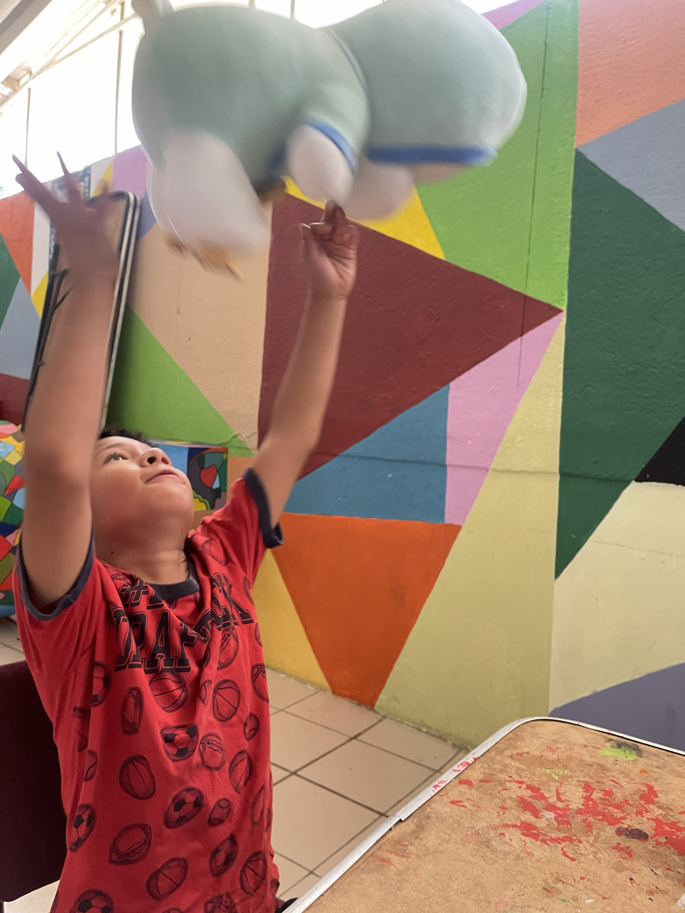

A transitional therapeutic object co-designed with children aged 5–10 navigating parental separation. Lucero accompanies and monitors the grieving process through voice interaction, storytelling, and daily care reminders.

In México, 166,766 divorces were registered in 2022 — an 11.4% increase from the prior year, with 48.1% involving minor children. In Oaxaca alone, 2,599 divorces were recorded.
Children of separated parents face elevated risks of behavioral disorders, poor academic performance, anxiety, and long-term psychiatric conditions. Yet in Huajuapan de León, where 26,321 people live in moderate poverty, private psychological support is inaccessible to most families.
Public institutions like DIF face capacity limitations. The question became: could a transitional object — something a child could hold and talk to — serve as a therapeutic bridge?
8 semi-structured interviews with child and school psychologists in Oaxaca. Key findings: guilt, low self-esteem, academic decline, isolation, and aggression as primary challenges. All experts endorsed transitional objects combined with play and art therapy.
Co-design sessions at DIF municipal with children aged 5–10. Children drew their ideal object, selected iconography themselves (star = voice diary, book = story, checkbox = reminders), and customized a plush prototype — driving the final design direction.
Storyboard → medium-fidelity physical prototype: a plush toy with an astronaut suit, embossed tactile buttons with children's selected icons, integrated speaker, and LED lighting. V2.0 switched to warmer tones after V1 feedback.
Phase 1 (DIF): 9 children, 45 tasks, 64% completion, 94% satisfaction. Children named it "Lucero."
Phase 2 (UsaLab UTM): 6 children, 30 tasks, 90% completion, 97% satisfaction. Children asked to keep Lucero.

Co-design session — Children selecting iconography at DIF

Usability test — Wizard of Oz session at DIF municipal
Children's strong preference for plush toys over electronic devices shaped the entire product direction — a physical companion to hold, not a screen to use.
Icons were selected by the children themselves during co-design, ensuring intuitive use without requiring reading ability. 46% had icon issues in V1 — resolved in V2.
By Phase 2, children showed genuine affective attachment — hugging Lucero spontaneously and responding emotionally to phrases like "Yo también te quiero mucho."
"Some children asked to keep Lucero at the end of the session, and expressed their affection when Lucero told them emotional phrases."
— Usability Test Phase 2, UsaLab · UTM

Field interactions — children engaging spontaneously with Lucero